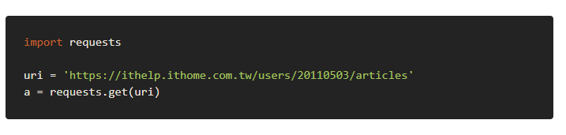

portable system <<
Previous Next >> Four wheel car
random grouping
Random grouping
要進行隨機分組及隨機點名，必須先了解程式裡導入的模組及在模組中所用的
語法、迴圈:request、ast.literal_eval、random、for迴圈
(1) request模組:此模組是為了可以使用 Python 來下載網頁上的資料，是以
request模組建立適當的 HTTP 請求，透過 HTTP 請求從網頁伺服器下載
指定的資料，分為兩種模式Post、Get。
上述我們將使用Get下載回來的資料存入到a變數，底下對於a變數我們能進行以下操作：
- url : 取得請求網址
- status_code : 伺服器回應的狀態碼
- text : 取得網頁 HTML 原始碼
如遇上需要帶上querystring參數可以這樣使用： 參考文獻: https://ithelp.ithome.com.tw/articles/10206215
HYPERLINK "https://ithelp.ithome.com.tw/articles/10206215"(2) ast模組: 此模組是python原始碼到位元組碼的一種中間產物，藉助ast
模組可以從語法樹的角度分析原始碼結構，其中的語法ast.literal_eval
是為了能夠安全地評估表達式節點或包含Python文字或容器顯示的字符
串。提供的字符串或節點只能由以下Python文字結構組成：字符串、字
節、數字、元組、列表、字典、集合、布林值、None。
Compile函式
先簡單瞭解一下compile函式。
compile(source, filename, mode[, flags[, dont_inherit]])
- source -- 字串或者AST（Abstract Syntax Trees）物件。一般可將整個py檔案內容file.read()傳入。
- filename -- 程式碼檔名稱，如果不是從檔案讀取程式碼則傳遞一些可辨認的值。
- mode -- 指定編譯程式碼的種類。可以指定為 exec, eval, single。
- flags -- 變數作用域，區域性名稱空間，如果被提供，可以是任何對映物件。
- flags和dont_inherit是用來控制編譯原始碼時的標誌。
參考文獻:https://www.itread01.com/content/1544847254.html
HYPERLINK "https://www.itread01.com/content/1544847254.html"(3) random模組:此模組用於生成偽隨機數，且有許多種用法，例如:隨機選取
choice、隨機選取 sample (一次選多筆資料)、隨機調換順序 shuffle (就
地調換順序)、隨機取得亂數 random (0~1之間的隨機亂數)、隨機取得亂
數 uniform (可以指定範圍)。
參考文獻: https://ithelp.ithome.com.tw/articles/10207483
(4) for迴圈: 在處理資料的時候，時常會需要重複執行某些相同的步驟；而迴
圈 (loop) 的作用是讓指定的某段敘述在條件符合的情況下一直重覆執行，
是程式設計中很重要的一種控制結構，且分為兩類:for、while
○ for迴圈基本語法:for 變數 in list、字串、range
○ while迴圈基本語法:while 布林值
for迴圈及while迴圈比較: for迴圈比較適用在已知迴圈數的問題，而
while迴圈則適用在「無法預知迴圈數」的問題上。
語法 - for
- A 、D 都省略時，for迴圈 跟 while迴圈 執行起來完全一樣。
for( [A.]一開始先做什麼事 ; [B.]條件式 ; [D.]等C每作完一次，就做什麼事 ){ [C.]當B條件成立時，就重覆做的事...}
通常A、B、D所用到的變數會是一致的。
執行起來流程如下
先做A ==> 檢查B條件，成立就做C，接著做D
==> 檢查B條件，成立就做C，接著做D
==> 檢查B條件，成立就做C，接著做D
...
...
==> 檢查B條件，成立就做C，接著做D
==> 檢查B條件，不成立離開
範例1 - 班級名條
code

#include<iostream>using namespace std;int main(){ int n; int i; cin >> n; for( i=1 ; i<=n ; i=i+1 ) { cout << "No." << i << endl; } return 0;}
for vs while
input
10
output
No.1No.2No.3No.4No.5No.6No.7No.8No.9No.10
範例2 - 發射倒數
#include<iostream>using namespace std;int main(){ int i; for( i=5 ; i>=1 ; i=i-1 ) { cout << i << "..." << endl; } cout << "Go!" << endl; return 0;}
參考文獻: https://www.csie.ntu.edu.tw/~b98902112/cpp_and_algo/cpp02/for_loop.html
portable system <<
Previous Next >> Four wheel car